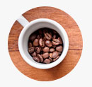

Escolha o seu café
Hoje em dia o café bom não é só aquele feito no coador de pano que nossas avós faziam, um novo mundo se abre para nós em matéria de tipos de grãos, procedência, tipos de torras e jeitos de preparar a bebida, que é tão popular na mesa dos brasileiros.